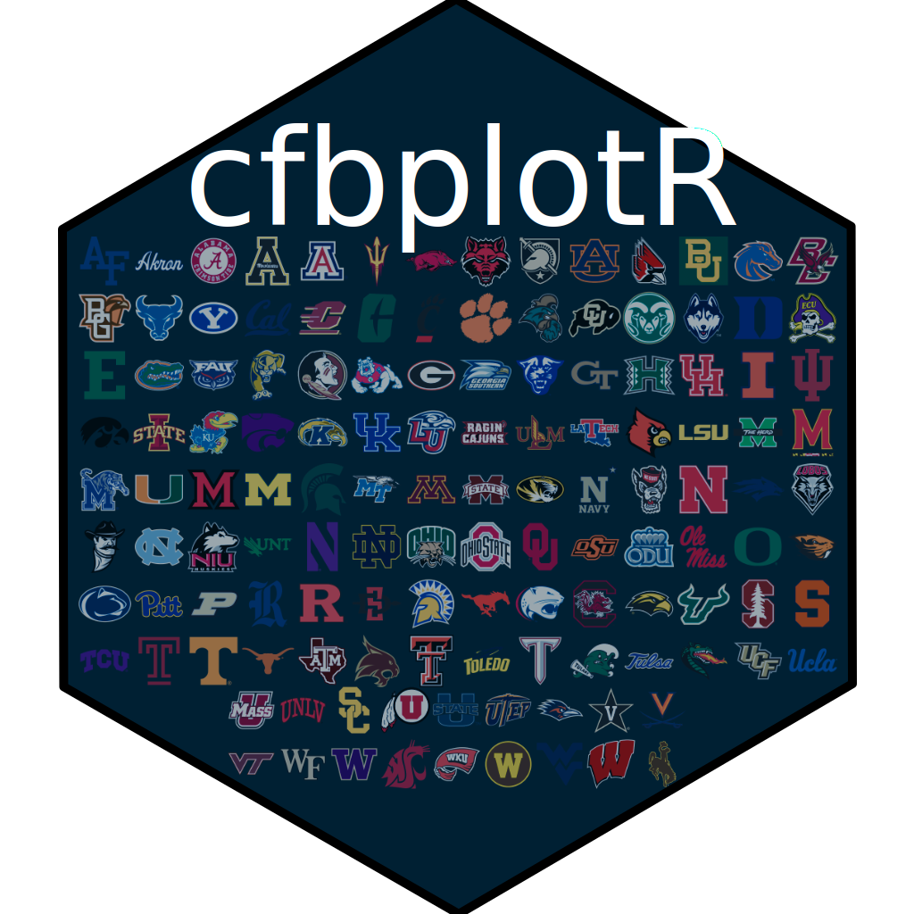
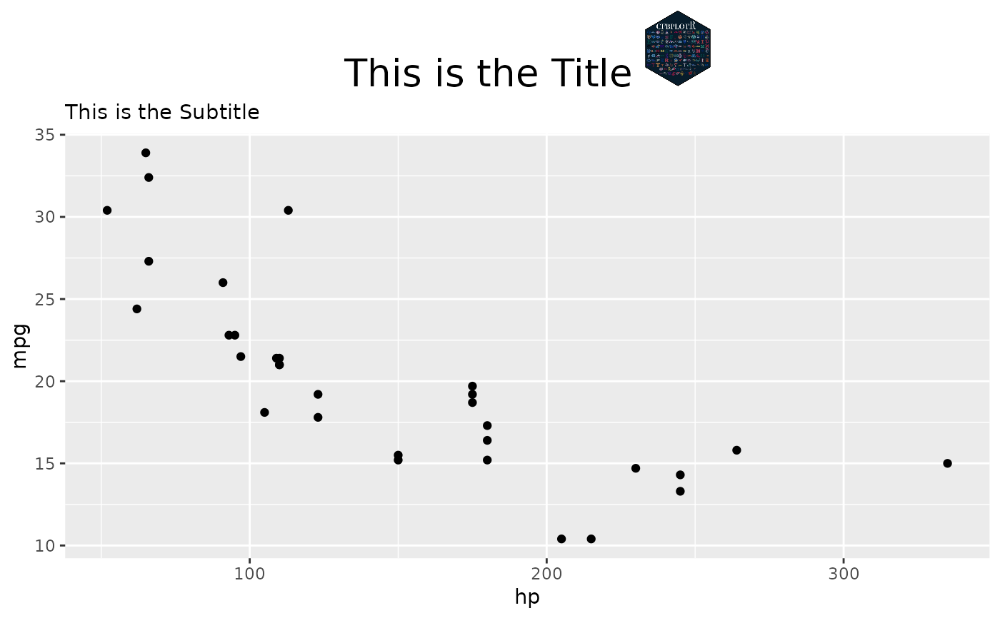

Functions for adding an image to the title of a ggplot
Source:R/ggtitle_image.R
ggtitle_image.RdThese functions work together to place an image to the left or right of the title in a ggplot. ggtitle_image is the main function but must be used with either theme_title_image() or setting the plot.title argument in ggplot2::theme() to ggtext::element_markdown()
Arguments
- title_image
The URL of the image to add to the title. If one of
valid_team_names(), the school logo will be used automatically.- title
The text for the title. The title has to be defined here as the function overwrites any current title text.
- image_height
The height of the image in pixels.
- image_side
One of "left" or "right". Places the image on either side of the title text.
- subtitle
Optional text for the subtitle. Does not overwrite current subtitle if left blank.
- ...
Other arguments passed on to
ggtext::element_markdown().
Examples
# \donttest{
library(cfbplotR)
library(ggplot2)
logo_url <- "https://github.com/Kazink36/cfbplotR/raw/master/man/figures/logo.png"
p <- ggplot(mtcars, aes(x = hp, y = mpg)) +
geom_point() +
labs(title = "This Title will be overwritten",
subtitle = "This is the Subtitle")
if (utils::packageVersion("gridtext") > "0.1.4"){
p +
ggtitle_image(title_image = logo_url,
title = "This is the Title",
image_height = 40,
image_side = "right") +
theme_title_image(size = 20, hjust = 0.5)
}
#> Error in png::readPNG(get_file(path), native = TRUE): libpng error: Not a PNG file
if (utils::packageVersion("gridtext") > "0.1.4"){
p +
ggtitle_image(title_image = "Utah",
title = "This it the Title",
image_height = 20,
image_side = "left",
subtitle = "This overwrites the old subtitle") +
theme(plot.title = ggtext::element_markdown(size = 20, hjust = 0.5))
}

# }